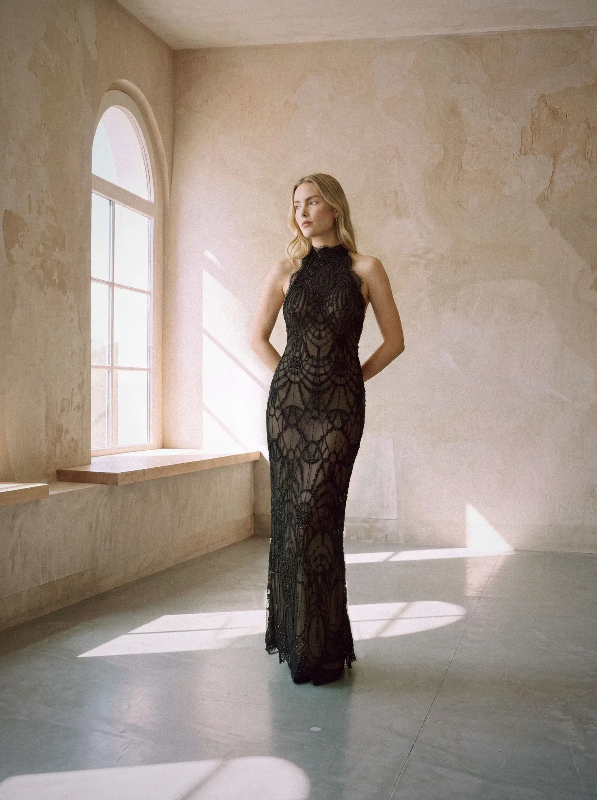
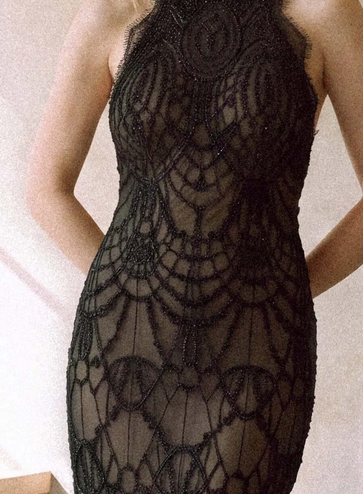
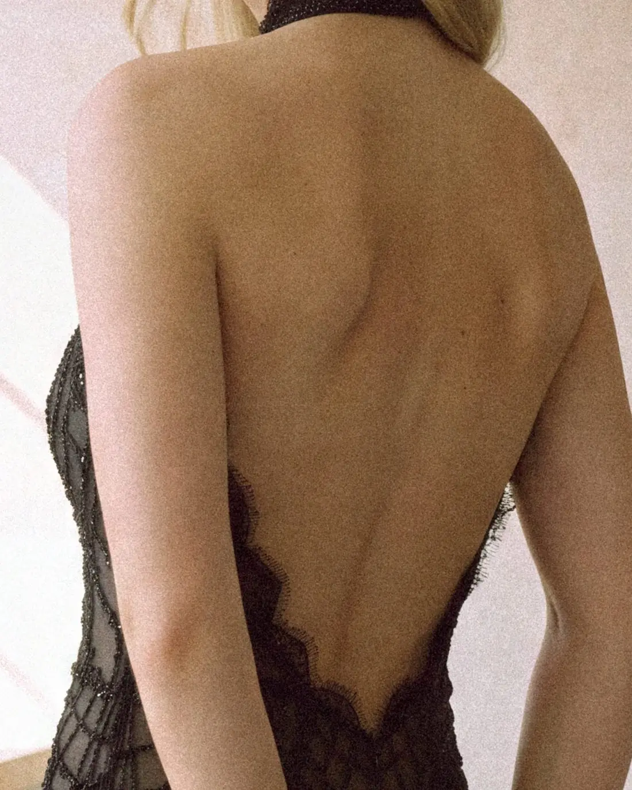
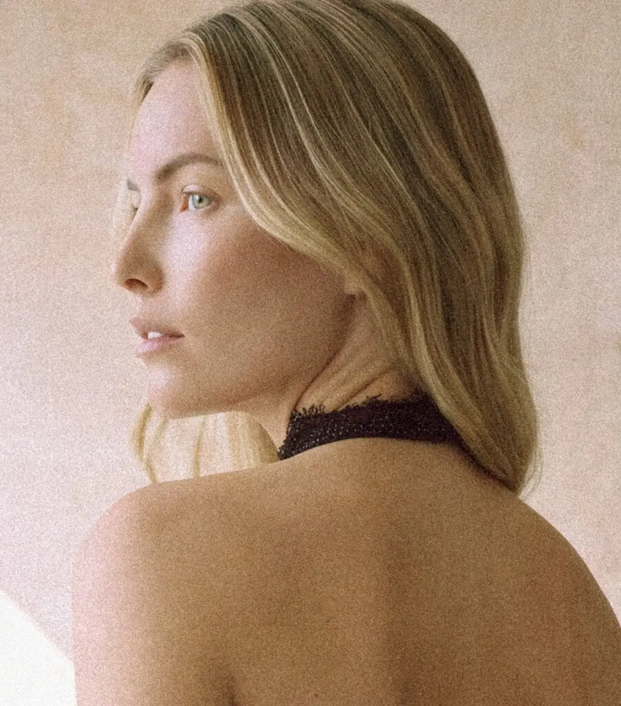
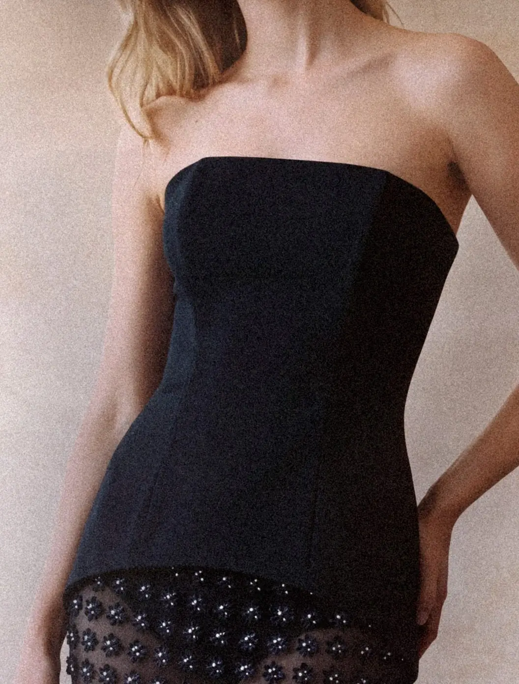
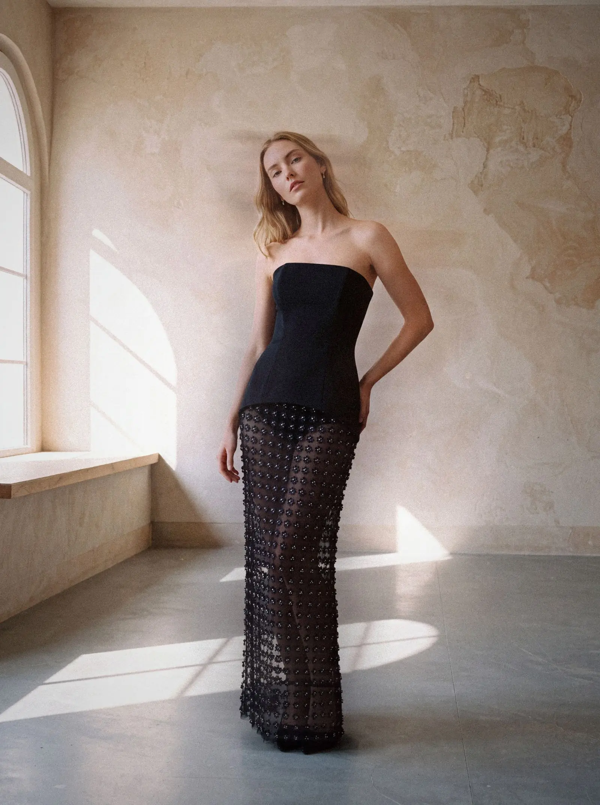

EVENING & BRIDAL COUTURE

1פתיחה בשכבותרקע, לוגו ושמלה זזים בקצב שונה. גללי לאט
2סיבוב השמלההגלילה מגלה את הגב

מלפניםמאחור
The Open Back
רקמת חרוזים שחורה על טול בגוון עור, נבנית שורה אחר שורה.
3מסלול אופקיגלילה למטה, תנועה הצידה
הפרטים הקטנים הם השמלה.
כל פרט נתפר ביד, באטלייה.





4תהליך שנעצרהתמונה נשארת, השלבים מתחלפים

הדרך לשמלה שלך
I
פגישת היכרות
נכיר, נדבר על האירוע, על הסגנון שלך ועל מה שאת מדמיינת.
II
סקיצה ובדים
עיצוב אישי, בחירת בדים, תחרות ורקמות מתוך הספרייה של האטלייה.
III
מדידות
השמלה נבנית ומתדייקת על הגוף שלך, מדידה אחר מדידה.
IV
מסירה
השמלה מוכנה, מגוהצת וארוזה, ואת מוכנה לרגע שלך.
5רקע שמשנה גווןלאורך כל הדף, בלי שמרגישים
עכשיו הרקע בגוון חול חם. בראש הדף הוא היה קרם בהיר, ובקטע הבא הוא יחזור לטיח.
6פחות כותרות קטנות, פחות מרכוזהחליפי בין לפני ואחרי
THE ATELIER
שמלות ערב וכלה בתפירה אישית, נבנות על הגוף שלך.
כל שמלה מתחילה בשיחה ונגמרת במדידה האחרונה. בדים נבחרים, רקמות בעבודת יד וגזרה שנבנית במיוחד עבורך, כך שאין שתי שמלות זהות.